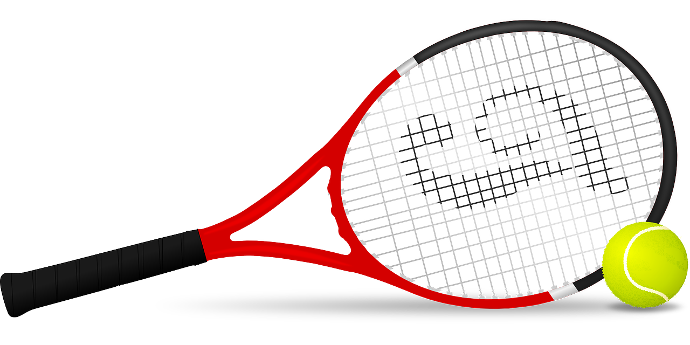
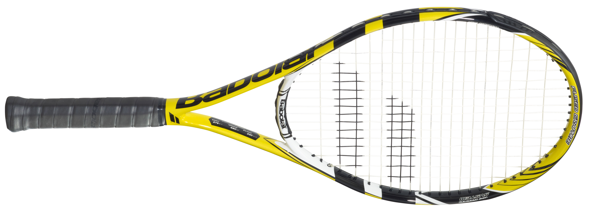
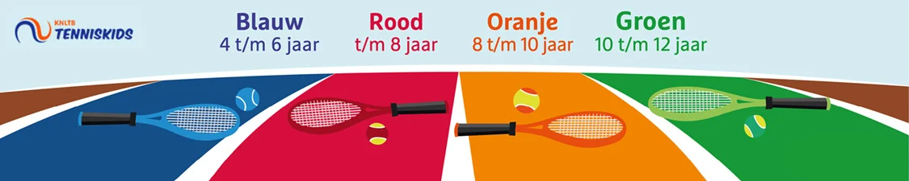
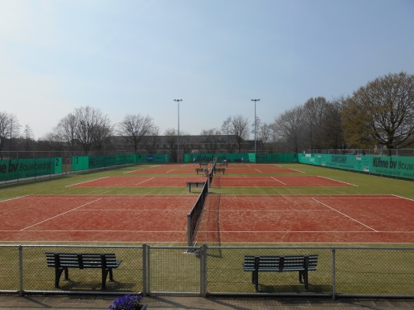
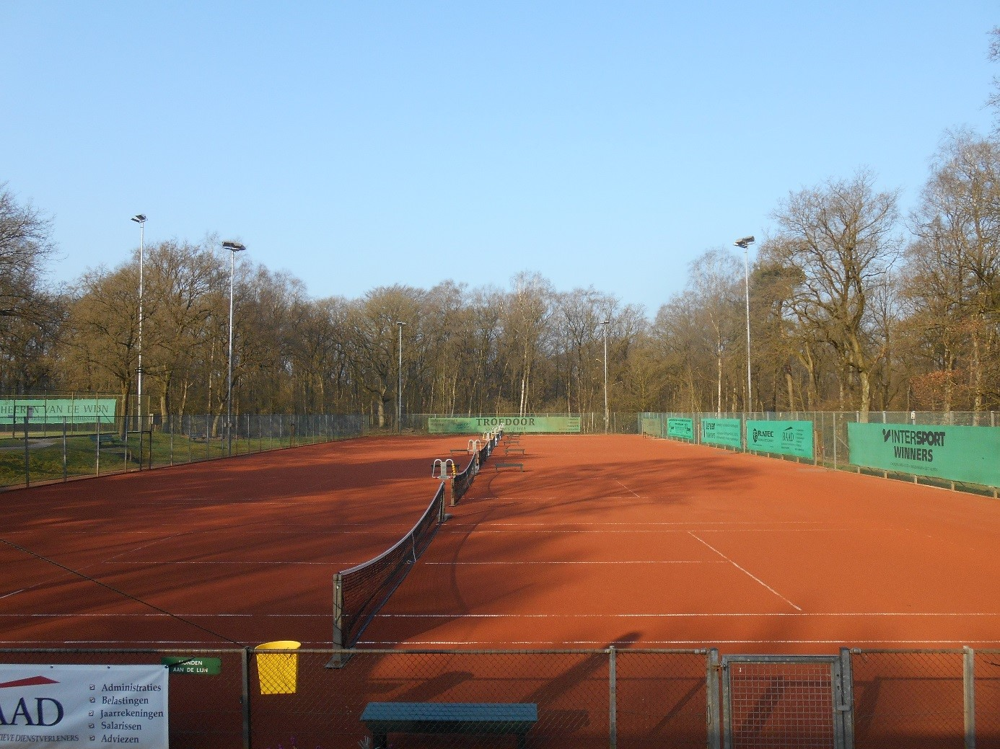

Tennisracket
Een tennisracket is essentieel als je tennis gaat spelen, een tennisracket is natuurlijk nodig om de tennisbal naar de overkant van het net te slaan. Als je een tennisracket gaat kopen moet je op de volgende dingen letten:
- Gripmaat, omtrek van de grip
- Gewicht van het racket
- Lengte van het racket
- Bladgrootte
- Materiaal
Voor meer informatie over het kiezen van een tennisracket kan je naar de site van Intersport.
 Tennisballen
De meeste tennisballen zijn fluorescerend geel voor goede zichtbaarheid. Kinderen die beginnen met tennis spelen gebruiken meestal andere soorten ballen, deze hebben een andere kleur en zijn een stuk zachter dan de normale ballen. Er zijn verschillende fases voor verschillende leeftijds groepen. De fases:
- Blauw, voor kinderen van 4 tot 6 jaar oud
- Rood, voor kinderen tot en met 8 jaar oud
- Oranje, voor kinderen van 8 tot en met 10 jaar oud
- Groen, voor kinderen van 10 tot en met 12 jaar oud
Klik voor meer informatie op het plaatje.
Schoenen
Tennis schoenen hebben een paar eigenschappen die ervoor zorgen dat je optimaal kan bewegen tijdens het tennisen.
- Weinig profiel, waardoor je niet struikelt terwijl je beweegt.
- Lichtgewicht materialen, zodat je snel van richting kunt veranderen.
- Een speciale vorm van grip, speciaal ontworpen voor verschillende soorten ondergrond.
- Demping voor je hele voetzool, zodat je voeten minder klappen opvangen wanneer je springt.
- Een buitenzool die gemaakt is van erg stug rubber.
Tennisbaan
Er zijn verschillende soorten tennisbanen met allemaal weer verschillende voor en nadelen, hier zijn een paar van de meest gebruikte soorten banen uitgelegd.
Kunstgrasbanen zijn relatief goedkoop en laat het water beter door dan de meeste alternative banen. Ook is kunstgras een stuk onderhoudsvriendelijker dan andere soorten tennisbanen.

Gravelbanen zijn het meest voorkomend in Nederland. De banen zijn relatief goedkoop maar hebben veel onderhoud nodig en water blijft er lang op liggen. Op gravelbanen kun je wel veel technischer spelen doordat de bal verder omhoog stuitert.

Goed Weer
Als je gaat tennisen moet het natuurlijk niet te hard waaien, als het te hard waait, waait je tennisbal gewoon weg door de wind. Het is ook het beste als het niet regent. Met regen stuiteren de tennisballen veel minder goed, en als je op een gravel tennisbaan speelt komen er al snel plassen te liggen. Daarom is het goed om eerst te kijken of het gaat gerenen voordat je tennis gaat spelen.
Het weer in Nederland:
Weercijfer voor tennis in Nijmegen: